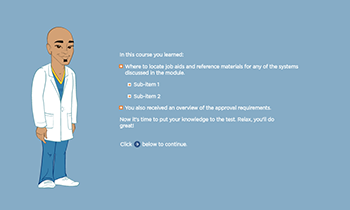
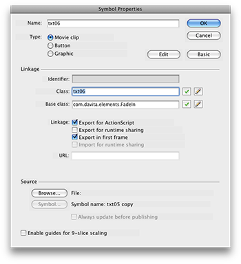

Using the Text Lesson Template
The Text Lesson is one of the most versatile templates and likely one of the most often used. It is used to create "show and tell" type lesson pages.


Using the Text Lesson Template:
- Add graphics and text to the stage and control timing using the timeline.
- To have graphics or text fade in:
- Select the graphic or text and make it a Movie Clip using Modify > Convert to Symbol... (or ⌘-F8)
- In the Library panel, select the Movie Clip and open the Symbol Properties dialog by right-clicking and selecting Properties...
- Check Linkage: Export for ActionScript
- change Base Class to: com.davita.elements.FadeIn
- To pause the lesson and allow the student to read the screen, drag a ContinueBtn from the Library to the Stage.
- To end the lesson, drag a LessonEnded component from the Library to the Stage.
- Compile the swf using ⌘-return. (The Test fla does not need to be edited in Flash).
- Close your fla.